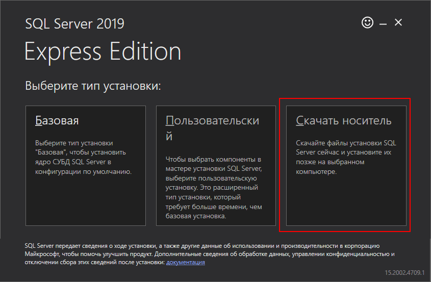
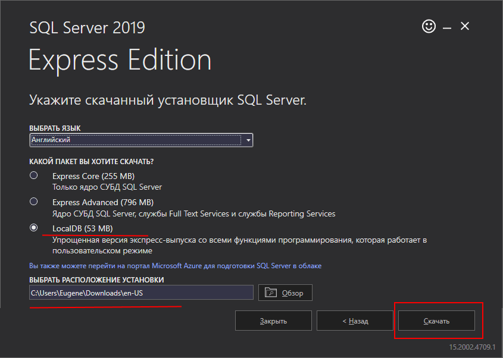
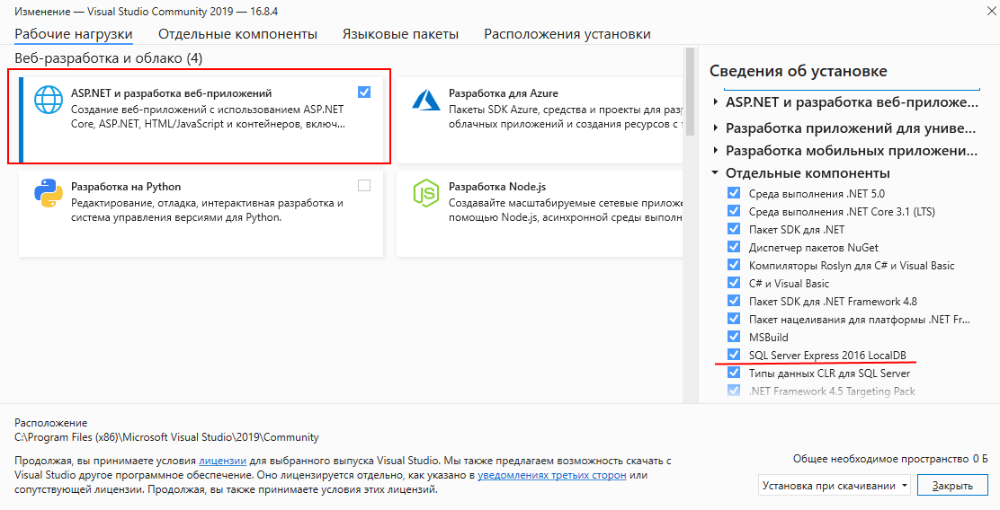
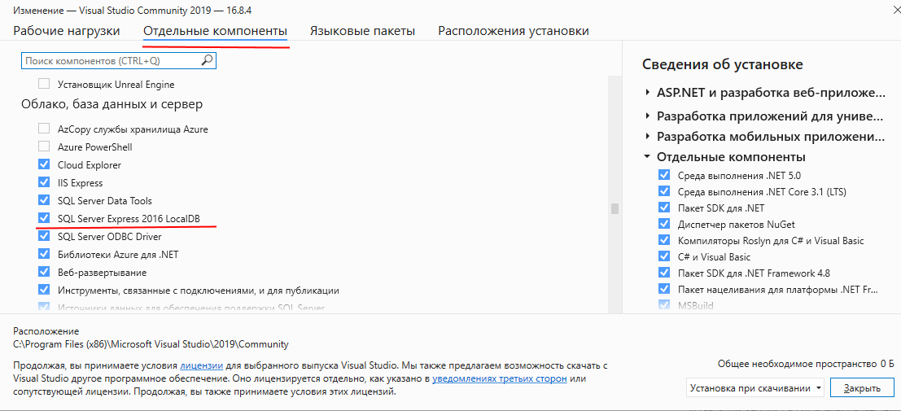
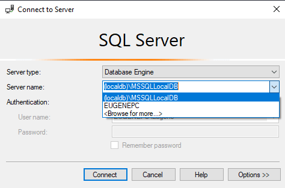
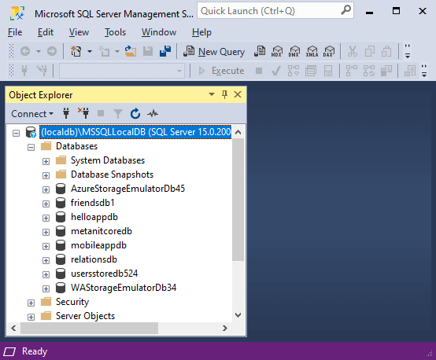

Установка LocalDB
Кроме полноценного MS SQL Server в версиях Developer или Express мы также можем установить облегченную легковесную версию SQL Server Express - движок LocalDB, который предназначен специально для целей разработки. Например, LocalDB может применяться для разработки программ на различных языках программирования для тестирования их работы с базой данных MS SQL Server, когда нет необходимости в большинстве возможностей стандартного MS SQL Server. И в этих условиях естественно проще установить небольшой легковесный движок, чем полноценный MS SQL Server.
Формально SQLLocalDB представляет компонент MS SQL Server Express, тем не менее есть несколько вариантов, как можно установить LocalDB.
Установка через программу усстановки SQL Server Express
Первый вариант представляет установка LocalDB через программу усстановки SQL Server Express. Так, загрузим с адреса https://www.microsoft.com/en-us/sql-server/sql-server-downloads установщик для SQL Server Express. На стартовом экране установщика выберем пункт "Скачать носитель":

Нам откроется окно для выбора компонентов для установки. Выберем на нем пункт LocalDB:

После нажатия на кнопку "Скачать" в указанную в окне папку будет загружен файл SqlLocalDB.msi. И после запуска этого файла будет установлен LocalDB.
Установка через мастер установки Visual Studio
Если вы вдруг работаете с Visual Studio, в частности, с платформой ASP.NET, то вы можете установить LocalDB через программу установки Visual Studio. В частности, от LocalDB зависит пункт ASP.NET и разработка веб-приложений. После установки данного пункта, так же будет установлен дополнительный компонент SQL Server Express 2016 LocalDB:

Тот же компонент можно выбрать отдельно на вкладке "Отдельные компоненты":

Подключение к LocalDB
После установки LocalDB к этой версии SQL Server также можно подключиться из SQL Server Management Studio. Для этого при запуске программы в окне подключения к серверу в поле "Server name" в качестве имени сервера необходимо указать (localdb)\MSSQLLocalDB

И после этого мы сможем работать с LocalDB в SQL Server Management Studio в рамках установленых для этого движка ограничений:
